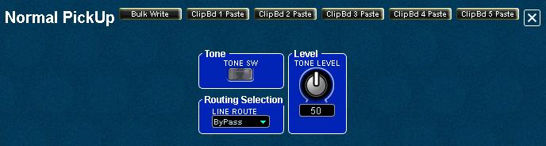

GR-55
FloorBoard Editor
Help
Index
Normal Pickup
This
is the Normal Pickup parameters panel where you can enable or disable
the the regular guitar pickups, set the Normal Pickup level in the overall mix, and
specify which effects routing structure to use for the guitar pickups.

Tone
- TONE SW - Enable or disable the Normal Pickup using this as an ON/OFF switch.
Routing Selection
For each GR-55 patch, the tone modules have separate routing capabilities:
- Tone modules (PCM Synths 1/2, COSM Modeling, and Normal Pickups)
can be routed to enter the effects chain at either the MFX effect
module input, at the Amp Modeling input, or to bypass both to connect at
the DELAY/CHORUS/REVERB inputs.
Level
- TONE
LEVEL - Set the volume level for the normal pickups using this knob.
You can adjust the level of the normal pickups against the PCM Synth
1/2 and COSM tones.
Bulk Write the Current Setting to a Range of Patches
You can use the editor's Bulk Patch Modifier feature to write the
current setting as seen on the open panel to a selectable
range of patches or to all patches if you wish to use the settings globally.
WARNING!!: Existing Patch data will be overwritten.
- Click the Bulk Write button to open the Bulk Patch Modifier.
- Select the starting and the finishing user patch numbers.
- Clcik Start to save the current settings to the selected patches, or click Cancel if you decide otherwise.